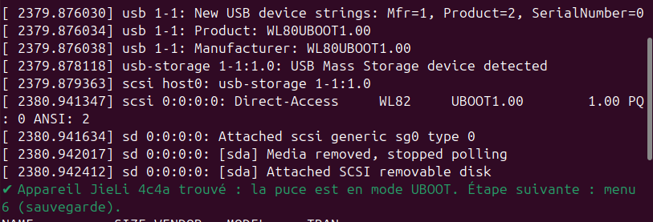
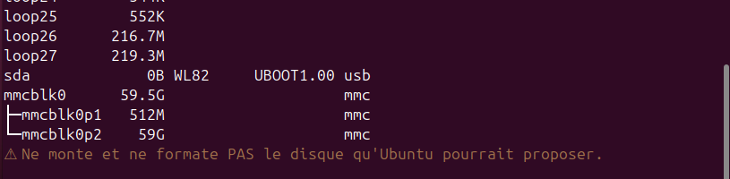
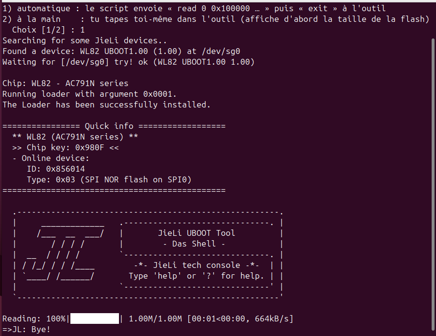

Your keyboard is not dead. It just needs a key.
A firmware that crashes at start-up leaves a JieLi-based device silent over USB. This brings it back through its own USB cable, from a Raspberry Pi, without opening it.
Made for the M-VAVE SMK-37 and FM-1. Inside their chip, a factory loader still waits in the ROM; a short pattern on two USB wires wakes it up. Once it is awake, any flasher can rewrite the firmware.
What you need
Nothing exotic, and nothing to unscrew on the keyboard.
-
A Raspberry PiPi 5 tested. Pi 4 and Pi 3 have the same pins and should work (Pi 3: use the 64-bit Raspberry Pi OS).
-
An old USB cableUSB-A to USB-C (or whatever plug your device has), a data cable, not a charge-only one. It gets opened, so not your best one.
-
Two 100 Ω resistorsOn D+ and D−: they protect the Pi and the chip if something is wrong. Any small ¼ W ones.
-
Three short wiresFemale Dupont jumpers are easiest: they push onto the Pi's pins.
-
A soldering iron and solderThree joints on the cable's wires, then tape or heat-shrink over each. 3-way Wago connectors work too, without soldering.
-
Pliers or a wire stripperTo open the cable's jacket in the middle and bare the four thin wires without cutting them.
-
A multimeterFor one check before you solder: which colour is really D+ and D− (cheap cables don't always follow the colours).
How it goes
- Check the cable. Multimeter in beep mode, cable unplugged, USB-A plug facing you, plastic tongue down: contact 1 is 5 V (red), 2 is D− (white), 3 is D+ (green), 4 is GND (black). Trust the beep, not the colour.
- Wire it as drawn above: black to pin 9, green through 100 Ω to pin 11, white through 100 Ω to pin 13. The red wire is never connected to the Pi's pins.
- Run the rescue script on the Pi. Its menu installs everything, shows the wiring, then guides each step.
git clone https://github.com/Tom-Rfid/jieli-usbkey-unbrick cd jieli-usbkey-unbrick ./rescue-en.sh
- Send the key. The order matters: switch the device off, choose “send the key”, press Enter, then switch the device on within six seconds. The chip catches the key and starts its USB loader. Switched on before Enter, it simply boots its firmware (a MIDI device): the script sees it and tells you to start again.
- See it appear.
lsusbshows4c4a:8057, a device calledWL80UBOOT1.00. Nothing? Switch on a little earlier or later, or try the slower key in the settings.
The loader is up: WL80UBOOT1.00, seen as a removable diskWL82 UBOOT1.00.
It shows as an empty disk (0 B): never mount or format it. - Back up the whole flash first. One megabyte, kept on a USB stick too. It holds your unit's key
calibration: never restore another unit's backup onto yours.

The backup: the tool finds the chip (WL82, AC791N series), installs its loader and reads the 1 MB of flash in about two seconds. - Write a firmware with M-Flasher: the maker's, or one of the two below. The bootloader, the key calibration and the Bluetooth pairings are left alone.
The hard part is getting the chip to answer again. Once it shows up as a USB loader, writing a firmware is the ordinary job flashers already do well; this project is about the first part.
What has been tested
M-VAVE SMK-37 Elite with a Raspberry Pi 5: key, backup, firmware written, keyboard back. M-VAVE FM-1 (the latest board, no logo under the screen): key and 1 MB backup (November 2026).
SMK-37 Pro (same chip family, supported by M-Flasher); Raspberry Pi 4 and 3.
The key from a Pico (RP2040), on Linux and maybe Windows. Report what works.
No Raspberry Pi? The Pico variant
A Raspberry Pi Pico (RP2040, a few euros) can send the key instead. It only sends the key: a computer stays at the other end of the cable as the USB host, sees the loader and runs the flasher. Same cable, same two resistors: green to GP6 (pin 9), white to GP7 (pin 10), black to GND (pin 38), red never.
Run rp2040/usb_key.py in Thonny (MicroPython), switch the device on within six seconds, then look
for 4c4a: in lsusb. On Linux the rescue script drives the rest
(KEY_SOURCE=pico). On Windows it should work too, with M-Flasher and a WinUSB driver for the loader,
but nobody has tried it yet.
This variant is prepared and not tested. If you try it, open an issue with your Pico, your device and what happened, or fork it and make it yours: a Windows guide would help a lot of people.
Questions
Do I have to open the keyboard?
No. Everything goes through the USB cable. On these boards the flash sits inside the JieLi chip anyway, so there is no flash chip to short.
Does a Raspberry Pi 3 work?
It should: the same 40-pin header, the same GPIO17 and GPIO27, and its USB ports are fine for the loader. Install the 64-bit Raspberry Pi OS, because M-Flasher's Linux package is built for arm64. Not tested yet; tell us.
Which devices?
Made for the M-VAVE SMK-37 and FM-1. Other JieLi devices answer the same key; the rest depends on the flasher.
Is it safe?
The resistors limit any mistake, the backup comes before anything is written, and the 5 V wire never meets the Pi's pins. Still: at your own risk, and not affiliated with M-VAVE or JieLi.
Something to put on it
Brought back to life? These are open firmwares for the same two instruments: a live-first synth, loops, scenes and performance gestures, on the keyboard you just rescued.
Thanks
kagaimiq / jielie documented the USB key; jl-uboot-tool speaks the loader's protocol; M-Flasher by jvitkauskas reads and writes the FM-1 and the SMK-37. This repository's own code (the scripts, the Pico key) is MIT; the tools it downloads keep their own licences.